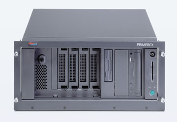
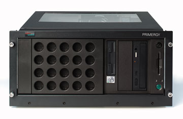
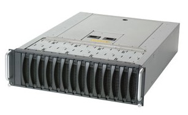
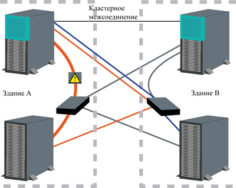
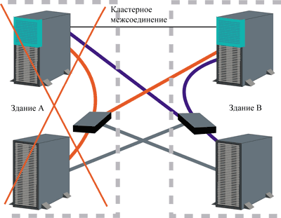

Андрей Борзенко
Информация, хранящаяся в электронном виде, составляет сегодня основу бизнеса почти любой коммерческой организации. Критические бизнес-приложения в таких областях, как хранение данных, видео, базы данных с оперативным доступом, обработка графики, системы машинного проектирования, приложения клиент-сервер и электронная коммерция, требуют не только высокой производительности и работы с большими объемами данных, но и доступности информации в любое время, а также надежности и удобства в обслуживании. Часто недостаточно просто хранить корпоративные данные; необходимо, чтобы они были доступны 24 часа в сутки, 7 дней в неделю, 365 дней в году. Это, в частности, необходимо в критических приложениях для обработки данных, которые географически удалены от обрабатывающего их сервера. Кроме того, часто необходим одновременный и очень быстрый доступ для нескольких серверов к удаленно хранящимся данным (так называемое разделяемое хранение в кластерах).
Проведенный консультационными фирмами анализ показывает, что один час простоя ИТ-систем в большинстве отраслей обходится в сотни тысяч долларов и может даже достигать миллионов долларов (например, при оказании финансовых услуг или работе на фондовой бирже). Это, в частности, подтверждает, что от безошибочной работы ИТ-инфраструктуры, особенно серверов и систем хранения данных, зачастую зависит само существование компании.
Корпорация Fujitsu Siemens Computers (http://www.fujitsu-siemens.ru) предлагает полный набор продуктов в области информационных технологий - от самых маленьких ноутбуков до самых мощных баз данных. Эта компания создает решения для бизнеса, отвечающие мировым стандартам и, по мнению ряда экспертов, является одним из безусловных лидеров европейского ИТ-рынка. Первое октября 1999 г. считается официальным днем рождения Fujitsu Siemens Computers, образовавшейся путем слияния Fujitsu Computers Europe и подразделения Siemens Computer Systems, входившего в департамент Information and Communication Products.
Конечно, многие производители серверов и систем хранения часто предлагают приблизительно одинаковые конфигурации, поэтому при выборе конкретной модели необходимо обращать внимание на те дополнительные функции и возможности, которые отличают семейство данной фирмы-производителя от других. Fujitsu Siemens Computers делает в своих продуктах основной упор на высокую отказоустойчивость, готовность и надежность, а также на вопросы защиты, не забывая при этом и о производительности. Стоит отметить, что Fujitsu Siemens Computers имеет значительный опыт построения систем масштаба предприятия и систем высокой готовности.
В частности, семейство Primergy представлено не только рядом серверов, в которых стандартная архитектура Intel дополнена специальными технологическими расширениями, предназначенными для улучшения показателей надежности и экономичности, но и подсистемами хранения данных. Линейка серверов включает машины начального уровня, серверы уровня рабочих групп и отделений, а также корпоративные серверы, которые полностью программно совместимы между собой, поскольку в них используются процессоры Pentium III, Pentium III Xeon и Itanium. Стандартная архитектура серверов Primergy обеспечивает хорошие возможности масштабирования и модернизации при возрастании нагрузки или изменении требований к производительности. Серверы этого семейства широко используются для Интернет/интранет-решений, в качестве серверов баз данных, для легких и средних систем управления производством и т.д. Немаловажно, что модели Primergy могут работать практически со всеми основными операционными системами, используемыми для серверов.
Качество и надежность техники и ПО компании обеспечиваются перспективными решениями для организации безостановочных и высоконадежных систем, дублированием критически важных подсистем и устройств. Наличие кластерных решений привлекает большинство потребителей, заинтересованных в высокой степени отказоустойчивости и доступности их информационных систем.
Серверы Primergy
В семейство Primergy входят серверы как в напольном (модели B120, B210, E200, H200, H400, K400), так и в стоечном исполнении (модели N200, N400, N800 и N4000), причем последние обычно называют вычислительными узлами. Заметим, что большинство моделей могут иметь двойное исполнение.
Primergy B120 - это однопроцессорная система, которая выпускается в двух вариантах: либо как автономный компьютер в корпусе типа "башня", либо как серверный модуль, помещаемый в стойку, причем один вид легко преобразуется в другой с помощью специального комплекта. Primergy B120 поставляется в разных конфигурациях, а следовательно, подходит для широкого диапазона приложений. Возможности его использования достаточно широки - сервер приложений для небольших рабочих групп, коммуникационный сервер, почтовый и Интернет-сервер. Модель оснащается процессором Pentium III с тактовой частотой 933-1000 МГц и имеет оперативную SDRAM-память PC133, наращиваемую от 128 Мбайт до 1,5 Гбайт. Primergy B120 имеет четыре слота PCI, позволяющих связывать сервер с внешними подсистемами. Расположенные на задней панели разъемы для горячего подключения SCSI-устройств обеспечивают быструю и простую модернизацию системы с помощью RAID-контроллера. Емкость внешней памяти составляет 144 Гбайт; кроме того, можно подключить дополнительные внешние накопители. Основное достоинство Primergy B120 - это гибкость; она позволяет малым и средним фирмам легко увеличивать емкость памяти и жесткого диска сервера, чтобы соответствовать растущим требованиям бизнеса.
|  | Сервер Primergy B120.
|
Сервер Primergy B210 может также использоваться как в напольном, так и в стоечном исполнении. Будучи сервером для рабочих групп, он обеспечивает масшабируемость процессоров, оперативной памяти и жестких дисков. Все эти особенности позволяют использовать его для Интернет/интранет решений, услуг связи или в качестве прикладного сервера. Primergy B210 построен на процессоре Pentium III с 256 Кбайт ECC-защищенной кэш-памяти второго уровня. Сервер имеет два банка памяти, каждый из которых содержит по два разъема и может использовать модули SDRAM РС133 объемом до 1 Гбайт. Такая организация позволяет расширять память до 4 Гбайт. Защита памяти осуществляется с помощью технологии ECC. Таким образом, при доступе к данным однобитовые ошибки в оперативной памяти обнаруживаются и автоматически исправляются. Сервер Primergy B210 имеет встроенную сетевую карту Intel 10/100+, которая поддерживает технологию Magic Packet Support, наиболее существенную для функции Wake-on-LAN.
|  | Сервер Primergy B210.
|
Primergy E200 - это двухпроцессорный сервер, предназначенный для критически важных задач. Он обеспечивает хорошую комбинацию простоты в обслуживании, высокой доступности и возможности индивидуально настраивать параметры работы. Благодаря масштабированию (работа с одним или двумя процессорами) и размещению информации на шести жестких дисках с горячей заменой (максимальная емкость составляет 216 Гбайт), это решение предоставляет гибкость, необходимую, например, для файловых и принт-серверов.
Сервер Primergy H200 от Fujitsu Siemens Computers по праву может быть отнесен к классу корпоративных серверов. Построенный на базе двух процессоров Pentium III Xeon с тактовой частотой 1 ГГЦ, он отличается довольно низкой начальной стоимостью. Максимальный объем оперативной памяти - 4 Гбайт SDRAM PC133 ECC. Суммарная емкость дисковых накопителей достигает 432 Гбайт. К сильным сторонам Primergy H200 относят масшабируемость для решений и баз данных с большими объемами информации. Primergy H200 также служит платформой для работы систем Интернет/интранет, электронной коммерции и целой области ERP-решений.
Четырехпроцессорные корпоративные серверы Primergy H400 не только справляются с приложениями, работающими в сложных сетевых средах, а также взаимодействующими с базами данных и Интернет-сайтами, но и имеют достаточный резерв мощности для приложений электронной коммерции. Серверы построены на базе процессоров Pentium III Xeon с тактовой частотой 900 МГц, имеют до 16 Гбайт памяти SDRAM ECC, а суммарная емкость жестких дисков может достигать 432 Гбайт. Primergy H400 отличает простота установки, высокая производительность и возможность горячей замены различных типов устройств. Резервирование жизненно важных компонентов вместе с возможностью оперативной замены жестких дисков, вентиляторов и PCI-контроллеров обеспечивает высокую отказоустойчивость и защиту, которые гарантируют круглосуточную работу серверов в условиях постоянной нагрузки.
Сервер Primergy К400 - это развитие линии серверов Primergy 870; в нем учтены растущие требования рынка к производительности 4-процессорных серверов. Primergy K400 поддерживают процессоры Pentium III Xeon, отличаются большей оперативной памятью (до 16 Гбайт SDRAM ECC) и мощным Ultra 3 SCSI-контроллером ввода-вывода (скорость передачи данных 160 Mбайт/с). Primergy К400 позиционируются как корпоративные серверы высшего класса и служат надежной масштабируемой платформой для широкого круга различных приложений.
Компактный двухпроцессорный вычислительный узел Primergy N200 на основе Pentium III с тактовой частотой 933-1000 МГц предназначен для решений на основе 19-дюймовых стоек. Благодаря компактному дизайну (высота его 1U) он подходит для центров обработки данных, где нужна наибольшая концентрация вычислительной мощности на небольшом пространстве. Этот сервер поддерживает ту тенденцию существующих и будущих концепций ПО и решений, согласно которой группы функций распределены по специализированным серверам. Эти сценарии постепенно начинают внедряться поставщиками услуг Интернет (ISP) и провайдерами аренды приложений (ASP). Емкость внутреннего жесткого диска (72 Гбайт) достаточна для операционной системы и приложений, необходимых в таких сценариях, а данные хранятся на выделенных подсистемах хранения.
Вычислительный узел Primergy N400 базируется на четырех процессорах Pentium III Xeon с тактовой частотой 700-900 МГц. Он имеет высоту 4U и типичную для семейства серверов Primergy надежность и высокий уровень готовности. Данный сервер также предназначен для использования в центрах обработки данных, где необходима концентрация вычислительной мощности и гибкости на небольшом пространстве. Объем оперативной памяти SDRAM ECC достигает 16 Гбайт, причем в 128-Мбайт модулях используется технология Chipkill (так называемая RAID-память). Суммарная емкость дисков составляет 144 Гбайт. Primergy N400 - это платформа для приложений, баз данных, выполнения функций файловых и принт-серверов; он также поддерживает хранилища данных. Часто Primergy N400 позиционируется и как автономный сервер для приложений, требующих большой вычислительной мощности.
В качестве основного аппаратного компонента для построения решений на базе Windows 2000 Datacenter Server компания Fujitsu Siemens Computers предлагает использовать восьмипроцессорные серверы Primergy N800 с процессорами Pentium III Xeon с тактовой частотой 700-900 МГц. Они относятся к классу корпоративных серверов, обладающих максимальной производительностью и высоким уровнем готовности. Primergy N800 имеют высоту 7U и для экономии места монтируются в стандартные 19-дюймовые стойки. Пространство для жестких дисков (суммарная емкость 144 Мбайт) в этих серверах невелико, поскольку с ними предполагается использовать внешние дисковые подсистемы. Поддерживается до 32 Гбайт оперативной памяти. Десять 64-разрядных разъемов PCI с функцией горячей замены адаптеров предоставляют широкие возможности для расширения с помощью дополнительных контроллеров. В дополнение к двум внутренним жестким дискам имеются интегрированные приводы для флоппи-диска и CD-ROM, а также встроенные порты - последовательный, параллельный и Ultra 2 Wide SCSI. Типичные области применения Primergy N800 - кластеризованные базы данных, например ERP-приложения. Чтобы гарантировать самые высокие уровни готовности системы, сервер Primergy N800 прошел интенсивные тестовые испытания и уже представлен как сертифицированная платформа в соответствующем разделе списка совместимого оборудования Microsoft Datacenter Hardware Compatibility List.
Платформа Itanium - отличный трамплин для независимых поставщиков ПО и центров прикладных решений. Потребность в ней определяется главным образом требованиями растущего рынка электронного бизнеса и рядом других новых областей. Кроме того, системы, работающие с базами данных и ориентированные на обработку транзакций, проектируются с целью извлечения новых возможностей из этой платформы. Использование огромного адресного пространства позволяет улучшить производительность программных средств. Fujitsu Siemens Computers выпускает на платформе Itanium вычислительный узел Primergy N4000. Сервер высотой 7U содержит до 4 процессоров Itanium с тактовой частотой 800 МГц и емкостью кэш-памяти второго уровня 4 Мбайт. Поддерживается до 64 Гбайт непосредственно адресуемой памяти. Два жестких диска с форм-фактором 1 дюйм имеют емкость по 36 Гбайт каждый. Дополнительные адаптеры могут подключаться через десять 64-разрядных разъемов PCI. На системной плате встроен 10/100 Мбит/с Ethernet-контроллер. Резервируемые источники питания могут заменяться в горячем режиме.
Подсистемы хранения данных
Подсистема Primergy S30 поставляется в двух вариантах: в виде модуля высотой 3U, устанавливаемого в стойку, и как автономный блок. Подсистема S30 допускает установку до 14 (2х7) однодюймовых жестких дисков объемом 9, 18 или 36 Гбайт с интерфейсом Ultra 160 SCSI. Высокая готовность обеспечивается за счет поддержки режима горячей замены для всех важных резервируемых компонентов - дисков и вентиляторов. Двухканальный SCSI-адаптер позволяет подключаться сразу к двум серверам Primergy. Максимальная емкость подсистемы достигает 504 Гбайт.
|  | Подсистема хранения Primergy S30.
|
Подсистемы Primergy S40 поставляются в стоечном и напольном исполнении. Модель S40 ES выполнена в корпусе высотой 6U и снабжена специализированным сервисным процессором с шинным интерфейсом CAN, а также жидкокристаллическим блоком контроля оператора. Поскольку передача данных осуществляется согласно спецификации LVD (Low Voltage Differential - передача низковольтного дифференциального сигнала), то для связи сервера с подсистемой хранения допустимы внешние кабели длиной до 10 м без специальных конверторов. Расширение конфигурации системы возможно при использовании до 12 высокопроизводительных жестких дисков с интерфейсом Wide Ultra 2 SCSI LVD. В зависимости от требований либо все двенадцать дисков работают вместе на одном SCSI-канале, либо они разделяются на три группы по четыре диска, подключаемые к трем SCSI-каналам. Максимальная емкость хранения составляет 432 Гбайт.
Для построения больших кластеров хранения данных S40-ES можно использовать совместно с моделью S40-DF. Для этого три подсистемы S40-ES включаются совместно с S40-DF, которая является активным компонентом, причем внешнее подключение ее к серверу осуществляется по двум каналам передачи Fibre Channel.
Управляемость и безопасность
Средства управления сервером и клиентами полностью интегрированы в средства управления системой, сетью и приложениями. Поэтому они обеспечивают простое, надежное и недорогое управление информационной инфраструктурой. Вместе с серверами Primergy поставляется несколько пакетов ПО, облегчающих управление ими.
ServerStart обеспечивает дружественную поддержку в установке и конфигурировании серверов, позволяя быстро сконфигурировать сервер в соответствии с конкретными требованиями. Для установки ОС предлагается специальное меню, проводящее пользователя через процесс установки.
ServerView - это простое в использовании средство, предназначенное для обслуживания и контроля работы серверов и кластеров. Оно обеспечивает предсказание возможных сбоев и позволяет управлять всеми Primergy-серверами в сети с единой консоли. Это уменьшает стоимость администрирования и снижает общую стоимость владения системой (TCO). Технология предварительного обнаружения и анализа позволяет выявлять сбои в работе системы и информировать о них. Средство автоматической реконфигурации и перезапуска сервера выполняет рестарт системы после удаления поврежденных компонентов. ServerView обеспечивает такие функции, как мониторинг температуры процессоров и окружающей среды, хранение сообщений об ошибках в энергонезависимой памяти, таймеры включения питания, таймер для выполнения процедуры автоматической реконфигурации и перезагрузки системы, посылка сообщения на пейджер в случае перезагрузки системы после ошибки, мониторинг загрузки шин, предупреждающее сообщение об угрозе выхода из строя вентилятора, таймер для мониторинга операционной системы и приложений, детальные отчеты о состоянии и ошибках процессоров и модулей основной памяти. ServerView Web Extension с помощью стандартного браузера обеспечивает доступ к любому серверу, расположенному где угодно.
В состав RemoteView входит средство управления сервером, которое вызывается при сбоях ОС и аппаратуры сервера. При желании в RemoteView может включаться RemoteView Service Board, которая функционирует как отдельная система внутри сервера со своей собственной операционной системой, Web-сервером, SNMP-агентом, пользовательским управлением, энергоснабжением и средствами предсказания и предупреждения сбоев. После запуска можно проводить дистанционную диагностику по локальной или глобальной сети. RemoteView предоставляет возможность обслуживать и конфигурировать систему даже через модем. При возникновении определенных видов ошибок программа управления сервером оповещает об этом администратора через пейджер и автоматически запускает RemoteView. После этого администратор может выполнять удаленное обслуживание и диагностику сервера. Дистанционное управление снижает потребность в дорогостоящих и отнимающих много времени сервисных услугах, в результате уменьшаются простои сервера, а стоимость обслуживания снижается.
Устойчивость к авариям
Для компьютеров на основе процессоров Intel следует принимать те же меры защиты от катастроф (например, пожара или наводнения), которые уже давно стали обычными в больших вычислительных центрах, работающих на базе серверов RISC/UNIX. Для этого резервные системы хранения данных и серверы должны располагаться на значительных расстояниях.
Эффективный и экономичный способ повышения устойчивости к ошибкам - объединение нескольких серверов Primergy в кластер. В случае отказа одной системы другая берет выполнение ее задач на себя. Fujitsu Siemens Computers предлагает кластерные решения для всех распространенных операционных систем (Windows NT/2000, Novell, UnixWare, Linux). Важные элементы в реализации устойчивых к катастрофам решений - кластерные решения для резервных серверов с автоматическим восстановлением (Fujitsu Siemens ServerShield, Microsoft Cluster Services, Fujitsu Siemens Reliant Monitor System for Linux, Novell Cluster Services, SCO NonStop Clusters), а также технология волоконно-оптических каналов (Fibre Channel, FC), которая используется для соединения с подсистемами хранения данных на расстоянии до 10 км. Кластеризация, которая позволяет одновременно повысить готовность системы и уменьшить время отклика на запросы и которая раньше была уделом только систем высшего ценового класса, сегодня превалирует на Intel-платформах. В принципе, можно было обеспечивать защиту данных от катастроф путем использования систем EMC Symmetrix 3000, имеющих функцию SRDF (Symmetrix Remote Data Facility). Однако для многих приложений, используемых небольшими и средними компаниями, эти системы слишком дороги.
Используя опыт, накопленный при создании высоконадежных систем на базе мэйнфреймов, работающих под управлением UNIX, Fujitsu Siemens Computers обеспечивает отказоустойчивым системам на основе Primergy нужную функциональность. Например, программные продукты MultiPath и Duplex Data Manager (DDM) позволяют создавать как избыточные каналы доступа между сервером и внешними подсистемами хранения, так и внешние подсистемы хранения, используя "зеркальное" отражение данных. В сочетании с кластерными решениями и оптоволоконной технологией это дает возможность организовать удаленные "зеркала" информационных центров, обеспечивая таким образом непрерывную доступность информационной инфраструктуры даже в случае крупных аварий.
В таблице приведена классификация функций, используемых для повышения общей готовности в соответствии с категориями безопасности.
Функции, используемые для повышения общей готовности
| Функция | Категория отказоустойчивости |
|---|---|
| Избыточные компоненты в серверах и подсистемах (блоки питания, RAID, диски с горячей заменой и RAID-контроллеры) | Неисправность отдельных компонентов сервера или подсистемы |
| MultiPath | Отказ волоконно-оптического канала между сервером и подсистемой (FC-контроллер или его компоненты) |
| Duplex Data Manager | Общий отказ дисковой подсистемы хранения данных |
| Кластеризация | Общий отказ сервера |
По заявлению компании Fujitsu Siemens Computers, проведено обширное тестирование систем, что позволяет гарантировать надежность взаимодействия всех компонентов в больших и сложных конфигурациях.
MultiPath
Этот программный продукт предназначен для серверов Primergy и обеспечивает защиту от отказа волоконно-оптического канала связи между компьютером и внешней дисковой подсистемой хранения. Причиной отказа Fibre Channel может быть повреждение компонентов (кабелей, концентратора) или неисправность самого хост-адаптера.
Для обеспечения общей отказоустойчивости дублируются FC-соединения с дисковой подсистемой; тем самым сервер приобретает альтернативные пути доступа через резервный хост-адаптер волоконно-оптического канала. При отказе одного из путей MultiPath автоматически инициирует процесс переключения на другой канал, перенаправляя туда все потоки данных (рис. 1). В общем случае поддерживаются два режима работы. В первом оба канала Fibre Channel работают в конфигурации "активный-резервный". При нормальном функционировании весь трафик данных направляется через активный канал, а резервный канал начинает работать в случае отказа основного. Это решение поддерживает постоянство потока данных без ограничений на пропускную способность даже при появлении ошибки. Второй подход связан с выравниванием нагрузки. При обычной работе общий поток данных распределяется между обоими каналами, идентифицируемыми по номеру логического устройства LUN (Logical Units). При появлении ошибки весь трафик идет по исправному каналу, при этом максимально используется его полоса пропускания. И в этом случае все приложения продолжают выполняться без пауз или остановок. Неисправные компоненты можно заменить и немедленно инициировать.
MultiPath работает под управлением операционных систем Microsoft Windows NT/2000 и Linux. Благодаря реализации на уровне драйверов, MultiPath не только гарантирует максимальную производительность, но и полностью прозрачно для операционных систем и иных программ. Это означает, что применение двойных и резервных маршрутов не обнаруживается на уровне операционной системы, благодаря чему не требуется отдельной сертификации кластера при использовании дополнительных сервисов.
|  |
| Рис. 1. Использование MultiPath с подсистемами хранения Primergy S40 DF.
|
Duplex Data Manager
Это программное решение для серверов Primergy обеспечивает работу удаленных резервных дисковых подсистем хранения данных. Применяя технологию Fibre Channel, можно создавать конфигурации, защищенные от катастроф, используя стандартную, экономичную технологию Primergy, в которой исключены все возможные локальные точки потенциального отказа благодаря большой удаленности подсистем друг от друга. Дело в том, что DDM дуплицирует каждую операцию записи (DuplexWrite), при этом каждая из двух дисковых подсистем все время содержит идентичные данные. Дисковые подсистемы могут подключаться как через индивидуальные FC-каналы, либо через "петлю" FC-AL (FC Arbitrated Loop), что обеспечивает не только резервирование подсистем, но и резервирование путей доступа. Каждый из двух путей доступа обеспечивает соединение с сервером через отдельный FC-адаптер. При отказе дисковой подсистемы (в случае ее полной физической утраты в результате пожара или иной катастрофы) DDM гарантирует, что данные будут обрабатываться без перебоев благодаря доступу к оставшимся "зеркалированным" данным.
DDM поддерживает работу с ОС Microsoft Windows NT/2000 и Linux и полностью прозрачно не только для них, но и для кластерных сервисов и используемых приложений.
DDM рекомендуется использовать в сочетании с MultiPath. Это обеспечивает доступность обеих подсистем хранения, даже если откажет один из двух FC-каналов. Другими словами, это сочетание гарантирует непрерывное резервирование данных, доступ к которым обеспечивается по одному исправному каналу связи. Несмотря на возможность работы в среде без поддержки кластеризации сервера, DDM главным образом рекомендуется использовать в комбинации с сервисами Microsoft Cluster Services или Fujitsu Siemens Reliant Monitor System для Linux, поскольку это решение обеспечивает резервирование не только системы и маршрутов данных, но и сервера. Полный отказ сервера и дисковой подсистемы в такого рода конфигурации (вызванный, например, катастрофой в здании А) обнаруживается программным обеспечением кластера на сервере в здании B, которое и активирует процесс восстановления работоспособности, в результате чего начинают обрабатываться "зеркалированные" данные, находящиеся в здании B (рис. 2). Причем ни прикладная программа, ни сервисы не в состоянии обнаружить, что теперь данные поступают из дисковой подсистемы, имеющей иное физическое местоположение.
|  |
| Рис. 2. Применение ПО DDM с подсистемами хранения Primergy S40 DF.
|